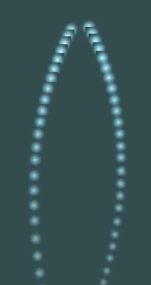

This project boils down to a particle simulator. Given everything that was taught throughout the course, how can the material be applied to create a particle simulator "from scratch." While this specific project only showcases fireworks, the code can fairly easily be extended to create a wide variety of unique particle systems. Beyond that, we also implemented a UI that enables a user to alter a couple of the firework parameters and see the results with the very next firework.
|

|
All in all, everything we did is fairly straightforward. We start by setting up and preparing a window to display everything. Following that, we retrieve the shaders and textures that we use, set them up, bind them, and essentially just ensure they are prepared to be used. At this point, the setup is essentially done and all that is left is creating our particles. In terms of our codebase, the skeleton is a combination of the Getting started and Particles tutorials from the Learn OpenGL website. The skeleton encompasses the setup that was just discussed, the basics of our ParticleEmitter class, and our fragment and vertex shaders.
After the skeleton was in place, we had a neat little particle emitter that infinitely emits particles upwards. With that, we begun our work on the main component of the firework, the explosion. The first concern we had when beginning work on this is the spawn shape. We knew that we wanted to still be able to create a trail effect so we could not completely remove the base spawn shape but clearly the base spawn shape would not work for an explosion. We debated between two options: (1) creating the particle emitter class a base class that we would then extend to different child class and (2) turning the particle emitter class into an extremely general class that can do just about everything. We concluded to make an extremely general class that could do anything because it would then be far more customizable and extendable in the future if we or anyone else wanted to base their project on ours and improve it. But more importantly, we all develop video games using the Unity3D game engine and Unity has implemented a very powerful particle system that developers could use so we used their creation as a template for our project in terms of how it should feel.
Now that we had an explosion that looked acceptable, we wanted to turn it into a particle fired that leaves a trail as it travels before exploding. Our initial question was "how does Unity do it?" And unfortunately they do it by using a fairly complex system that is much easier to deal with using a UI than using code. We started thinking about various ways to try and design and implement a similar subparticle system to that of Unity. Essentially, the idea was that we create one particle emitter instance that has a two children emitters. The first child emitter is alive for the first couple seconds and just spawns particles as our root travels up. The second emitter would be the explosion and activate as soon as the root "dies." While definitely feasible, it was out of scope for the provided time period so we decided to make a very specialized version of what was just described. We created a firework class that had two child emitters and was itself the third. One child displayed the trail while the second the explosion. It all worked as explained above except inside the firework wrapper class.
With the firework class done, we just started adding different settings that we could mess with and modify. The last two things we had a fair amount of trouble implementing was a particle that faked the emittion of light and the UI. To fake the emittion of light, we created a completely new texture that had a very opaque center and a mostly transparent outer rim. At the same time, altered the particle so it was represented by four triangles all coming from the center instead of two separated by the diagonal. The idea was that the center point would be assigned a white while the other four points will be assigned the firework color and there would be a gradient from the center to the outer rim. This sort of worked but removing it and just setting everything to a red and then a white produced much cleaner results so we scapped the gradient idea. For the UI, there was a lot of debugging because of how the project was set up in the very beginning. Rather than using CMAKE, we just created a Visual Studio project so it took a lot of work to correctly set up the project and making sure everything was still running as expected.
The last concern that we had throughout this project was just its speed. There were times when we were having significant lag spikes in the program from using too many particles. After a few minor optimizations such as increasing the pool size for each emitter and removing unnecessary things when refactoring, we were able to mostly remove the lag.
Video: